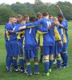
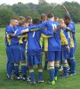

Kingston & District Football League

 



Minutes of Management Committee meeting - 12 May 2015
Meeting opened: 19.00.
Present: Mike Hallett (Chair) Lew Block Andy Brown Janet Ford Frank Gardiner Mark Giles Maurice Gilley Malcolm Hall Jim Lee Darren O'Connell Dave Short Brian Smith Maurice Webb
There were no apologies for absence:
1. Chairmans's Report. 1.1. LM Utd. sent a warning letter regarding discipline. 1.2. Mike Hallet wants to see Petersham Pumas at Committee Meeting on 19 May. 1.3. Following a discussion it was agreed that dates for General Meetings would be those agreed in Item 1.1. on minutes for 14 April. 1.4. Mike Hallett thanked everyone for their help at KDFL Cup Finals. 1.5. Maurice Webb reported that two fixtures had not been arranged. 1.6. Maurice Gilley felt that unregistered players were still playing. Spot checks were to be carried out and this would be announced at the August General Meeting. 1.7. Mike Hallett proposed changing KDFL rules to allow for 10 players for each team, per season, to be registered on the day of the match. Though it would still be only 2 players on any one day. This was seconded by Malcolm Hall and carried unanimously. 1.8. Read out details of individuals with KDFL to receive awards.
2. Secretary's Report. 2.1. Fine on Esher FC, in respect of absence at General Meeting, to be rescinded. This was proposed by Janet Ford, seconded by Frank Gardiner and carried Nem Con with 1 abstention. 2.2. Janet Ford detailed changes to league rules as required by Surrey County FA.
3. Treasurer. 3.1. The following sums were noted: Current Account - £3,241.26 Deposit Account - £10,188.51 Guarantee Fund - £3,087.31 125th Anniversary Fund - £751.68 3.2. 11 clubs have a total of £385.00 in fines outstanding. 3.3. 5 clubs have each had fines totaling in excess £100.00.
4. Fixtures. 4.1. Unplayed fixture on 18/04/15 in .Div. 3: Corinthians 12 FC v AFC Kingston. AFC Kingston unable to field a team and fined £25.00. Match points awarded to Corinthians 12 FC, who may claim reasonable expenses. This is in accordance with league rule 10(f). 4.2. Unplayed fixture on 18/04/15 in Div. 3: St. Martins Res. v Chesington KC Res. Chessington KC FC unable to field a team and fined £30.00. Match points awarded to St. Martins FC, who may claim reasonable expenses. This is in accordance with league rule 10(f). 4.3. Unplayed fixture on 21/03/15 in League Senior Cup: MC United FC v Barnslake FC. MC United FC unable to field a team and fined £15. Match awarded awarded to Barnslake FC, who may claim reasonble expenses. This is in accordance with League Cup rule 24. 4.4. Unplayed fixture on 02/05/15 in Prem. Div: Parkside FC v MC United FC. MC United FC unable to field a team and fined £25.00. Match points awarded to Parkside FC, who may claim reasonable expenses. This is in accordance with league rule 10(f). 4.5. Unplayed fixture on 02/05/15 in Div. 3: Lower Green FC v AFC Hampton. AFC Hampton unable to field a team and fined £15.00. Match points awarded to Lower Green FC, who may claim reasonable expenses. This is in accordance with league rule 10(f). 4.6. Unplayed fixture on 09/05/15 in Prem. Div: Parkside FC v Oxshott Royals FC. Oxshott Royals FC unable to field a team and fined £15.00. Match points awarded to Parkside FC, who may claim reasonable expenses. This is in accordance with league rule 10(f). 4.7. Unplayed fixture on 09/05/15 in Div. 2: Darkside FC v Epsom Casuals FC. Epsm Casuals FC unable to field a team and fined £15.00. Match points awarded to Darkside FC, who may claim reasonable expenses. This is in accordance with league rule 10(f). 4.8. Fines and Match/Match Point awards in respect of items 4.1. to 4.7. (above) proposed by Maurice Webb, seconded by Andy Brown and carried unanimously. 4.9. Maurice Webb to investigate why a further two matches were unplayed and report to this committee on 19 May.
5. Registrations. 5.1. Maurice Gilley reported that he had been "lax" on fines and suggested looking at clubs who had accrued a large amounts of fines to see if they needed help with organisation.
6. Clubs appearing before committee. 6.1. Teddington FC represented by their team manager. The club's code of conduct was discussed.
Meeting closed: 20.25.
Minutes of General Meeting - 12 May 2015
Meeting opened: 20.40.
Present: Mike Hallett (Chair) Lew Block Andy Brown Janet Ford Frank Gardiner Mark Giles Maurice Gilley Malcolm Hall Andy Holmden Jim Lee Darren O'Connell Dave Short Brian Smith Maurice Webb Plus representatives from clubs as per roll call.
Apologies for absence: David Christmas Richmond & Kingston Old Boys FC
1. Chairman's Report 1.1. Mike Hallett thanked everyone who had participated in recent KDFL cup finals. 1.2. Individuals who were to receive awards will be contacted in the near future.
2. Secretary's Report 2.1. Completed KDFL application forms for the 2015/16 must be forwarded to Janet Ford by 15 May. 2.2. Clubs not re-applying for next season asked to send e-mail to Janet Ford.
3. Treasurer's Report 3.1. The following sums were noted: Current Account - £3,241.26 Deposit Account - £10,188.51 Guarantee Fund - £3,087.31 125th Anniversary Fund - £751.68 3.2. Brian Smith reported that 11 clubs had accrued fines in excess of £400.00.
4. Fixtures. 4.1. Printed copies of final league tables available.
5. Registrations. 5.1. Under FA's Whole Game System, players are financially liable if their club 'folds'.
6. Other Business. 6.1. Andy Brown asked clubs for team photographs to appear on website. This would be on the understanding that whoever had the copyright for the photograph would make no charge to the KDFL.
Meeting closed: 21.00.
Minutes of Management Committee meeting - 19 May 2015
Meeting opened: 19.00.
Present: Mike Hallett (Chair) Andy Brown David Christmas Janet Ford Frank Gardiner Maurice Gilley Jim Lee Brian Smith Maurice Webb
There were no apologies for absence:
1. Fixtures. 1.1. In respect of item 4.9. on minutes of 12 May (above), the following matches were not played: AMY FC v Old Wimbledonians FC KC Chessington v Ewell Saxons FC It was proposed by Maurice Webb and seconded by Jim Lee that, in accordance with league rule 10(f), each club is fined £10.00 and both matches are void. An amendment was proposed by Andy Brown and seconded by Frank Gardiner that there would be no fines but both matches would be void. The amendment was carried 5-2 and the amended proposal was carried 6-0 with one abstention. 1.2. Esher FC are now part of Colliers Wood Utd. FC.
2. New clubs appearing before committee. 2.1. The Following clubs were represented by the following individuals: TFT FC - Lawrence Robinson Rygas FC - Ryan O'Sullivan and Barry Hurley AFC Centrale - Steve Moore KGC FC - Neil Rattan Young Boys FC - Haesoo Bae Motspur Park FC - Gary Hammocks and Dan Hammocks 2.2. The above clubs would be recommended for membership at the AGM.
3. League Constitution. 3.1. Maurice Webb presented committee members with a proposed constitution for next season and there was a discussion on it. 3.2. It was agreed that the league was now 'full' and any more clubs applying would have to go on a 'waiting list.
Meeting closed: 21.45.